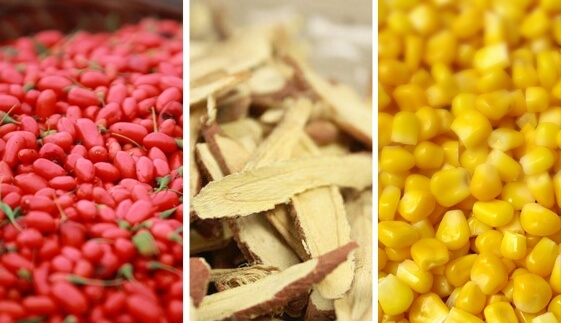
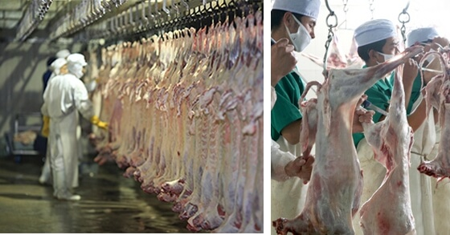
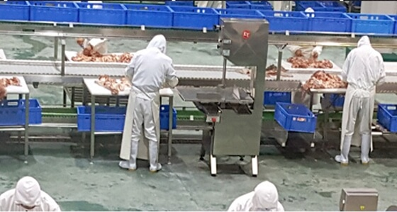
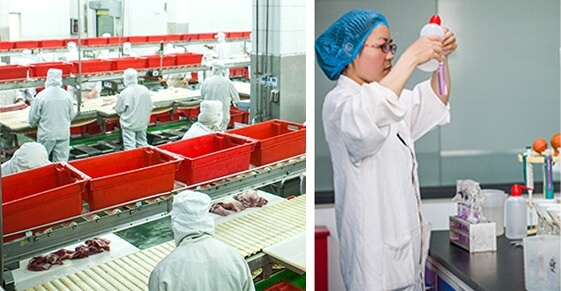

1. 涝河桥生态牧场位于世界公认的北纬38°黄金畜牧带，土地肥沃，牧草丰美，日照长，黄河水滋润，造就了宁夏滩羊香而不膻，肥而不腻。
2. 草料精选宁夏独特的天然食材：枸杞、甘草、玉米等，结合牧场放养，保证每只滩羊体重控制在30斤左右，不肥不瘦，羊肉蛋白质更高。
3. 滩羊屠宰过程严格遵照伊斯兰教习俗进行，保证纯正清真品质，洁净健康。
4. 新鲜的羊胴体直接分割，全程12道工序无菌化操作，肉质精挑细选，营养黄金比例2:8，绝不含任何添加剂，绝不掺杂其他肉制品。
5. 产品经过工厂质检和本地畜牧、食药监、卫生等政府部门严格检疫后方可出厂，进入外地市场还需接受当地政府检查，重重检验，只为高品质。